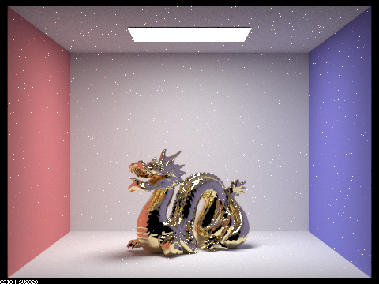
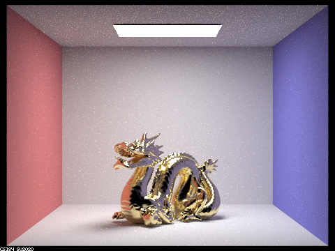
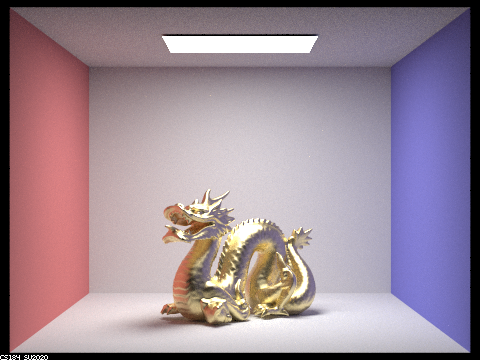
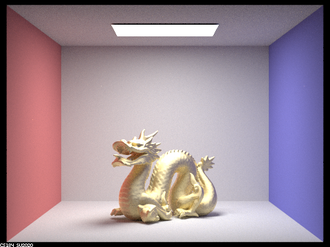
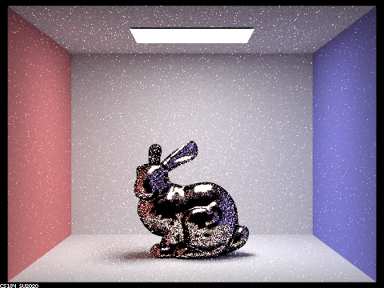
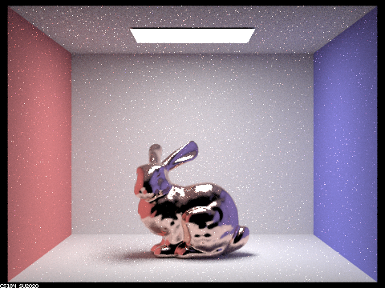
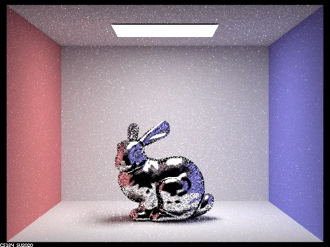
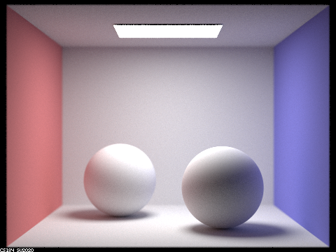
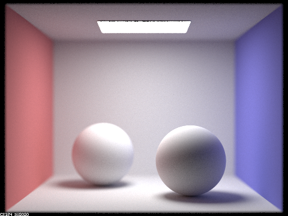
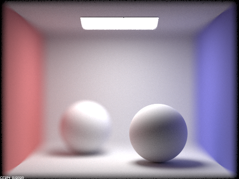

CS184 Project 3-2 - Max Lord and Eugenia Gavrilova
Overview
1. An overview of the project, including your approach to and implementation for each of the parts, as well as what problems you have encountered and how you solved them.
This project extended the initial ray tracing work we did in project 3-1. In task 2, we implemented the microfacet BSDF by first implementing the BSDR with the given formula,
then the normal distribution function, then the fresnel term. We implemented importance sampling
by using the two given pdfs and the result of the inversion method for integration. Finally, we use the given formulas to
derive p_w(h) and then the pdf of sampling w_in with respect to solid angle. In task 4, we extended our pinhole camera model to a thin lens which allowed us to experiment with depth of field.
Using the camera-space coordinates of a point on the sensor found in project 3-1, we scaled those coordinates by the focal distance to
intersect with the plane of focus, then found the direction of a ray towards the focus, as well as the origin of the new ray, then converted all coordinates back into world coordinates from camera space.
In the pictures shown, we used the spheres to show how as we hold aperture steady and change focal distance, different parts of the scene come into focus.
If we hold distance steady and change aperture, one part of the scene is always in focus but the rest becomes blurry.
Most problems were due to small mistakes when translating the spec requirements into code, which we found by noting that the output images were incorrect and scanning through the code for mistakes.
Part 2
1. Show a sequence of 4 images of scene CBdragon_microfacet_au.dae rendered with alpha set to 0.005, 0.05, 0.25 and 0.5.
The other settings should be at least 128 samples per pixel and 1 samples per light. The number of bounces should be at least 5.
Describe the differences between different images.
In these images, when alpha gets smaller, the surfaces of the dragon become glossier and seemingly more reflective. When α gets larger, the surfaces appear more matte.
(Starting from .005)




2. Show two images of scene CBbunny_microfacet_cu.dae rendered using cosine hemisphere sampling (default) and your importance sampling.
The sampling rate should be fixed at 64 samples per pixel and 1 samples per light. The number of bounces should be at least 5.
Briefly discuss their difference.
In these images, the importance sampled render removes much of the noise that remains in the cosine hemisphere render by sampling according to the shape of the Beckmann NDF.
(hemisphere, importance)


3. Show at least one image with some other conductor material, replacing eta and k. Note that you should look up values for real data rather than modifying them arbitrarily.
Tell us what kind of material your parameters correspond to.
This bunny was rendered using parameter values for silver.

Part 4
1. In a few sentences, explain the differences between a pinhole camera model and a thin-lens camera model.
A pinhole camera is essentially a special case of a thin-lens camera with an aperture of 0.
As aperture size increases, the number of light rays hitting the scene increases, which blurs the returned 2d image.
The thin lens allows a ray not going through the center to bend, so rays may intersect with different parts of the scene
and cause more blur or focus in some parts depending on the focal distance and aperture.
The key to the difference is more rays playing a role in intersecting with the point in focus and surrounding objects,
and that focus can be adjusted with the focal distance and aperture settings.
2. Show a "focus stack" where you focus at 4 visibly different depths through a scene.
Aperture: 0.5, Depth 4.5, 4.8, 5.0, 5.3
3. Show a sequence of 4 pictures with visibly different aperture sizes, all focused at the same point in a scene.
Depth: 4.5, Aperture 0.05, 0.1, 0.3, 0.5



Collaboration
We split up the project—one partner did part 2 and the other did part 4. We kept in contact regarding our progress
and used git branches so we didn't interfere with each other's work.
Website Link
https://cal-cs184-student.github.io/sp22-project-webpages-maxqlord/proj3-2/index.html